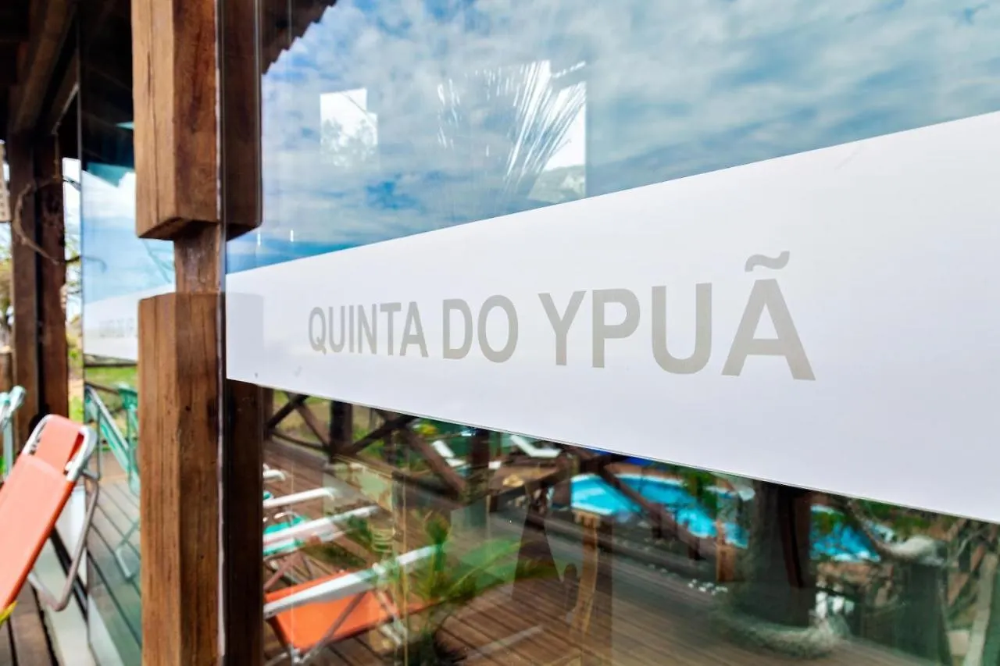
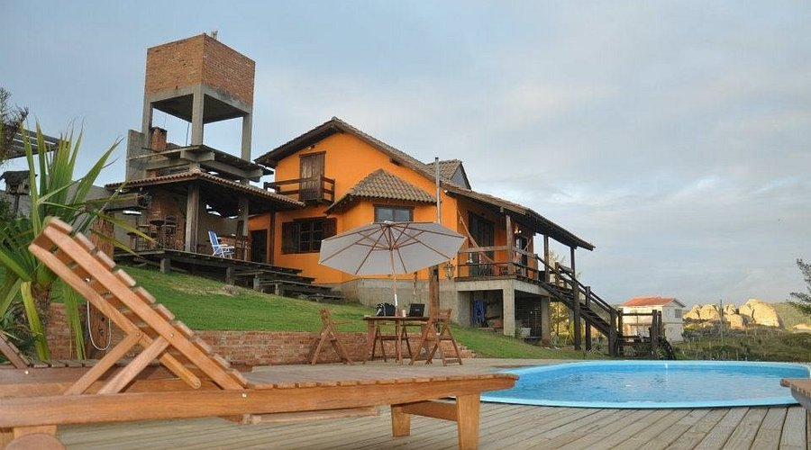
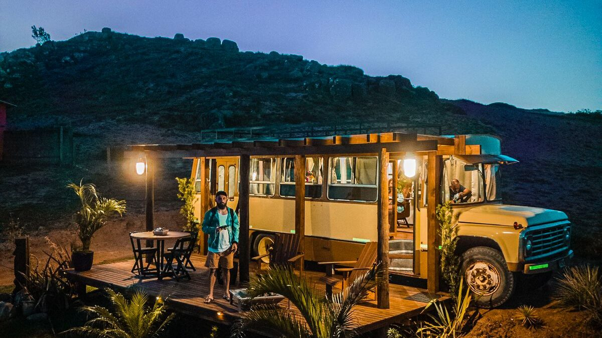
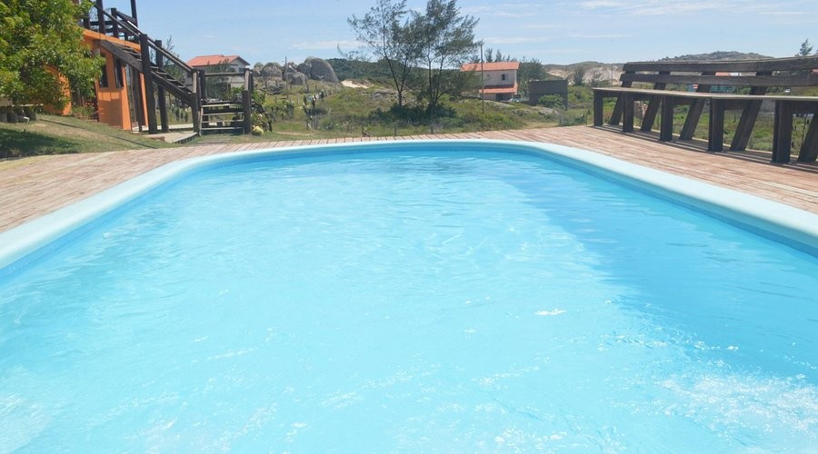
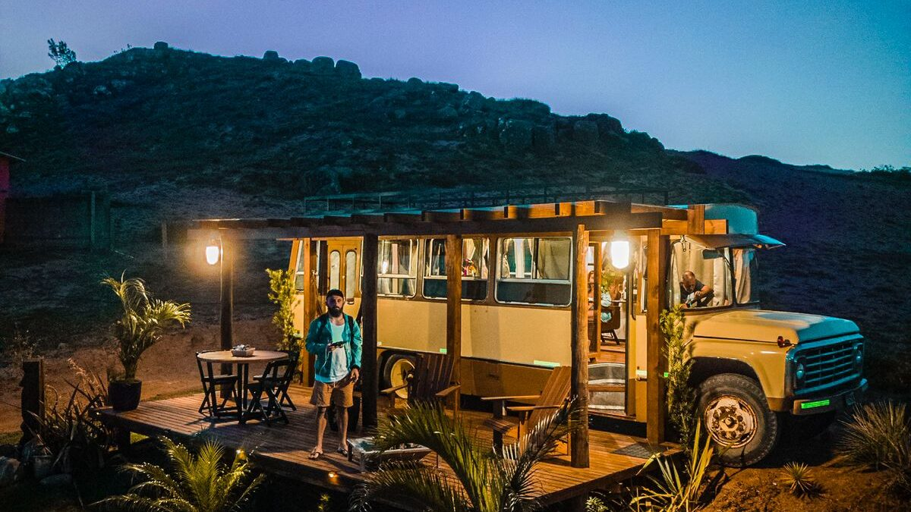
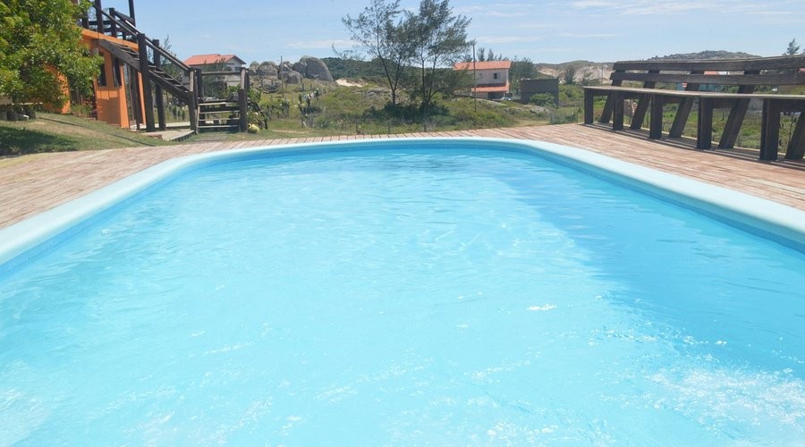
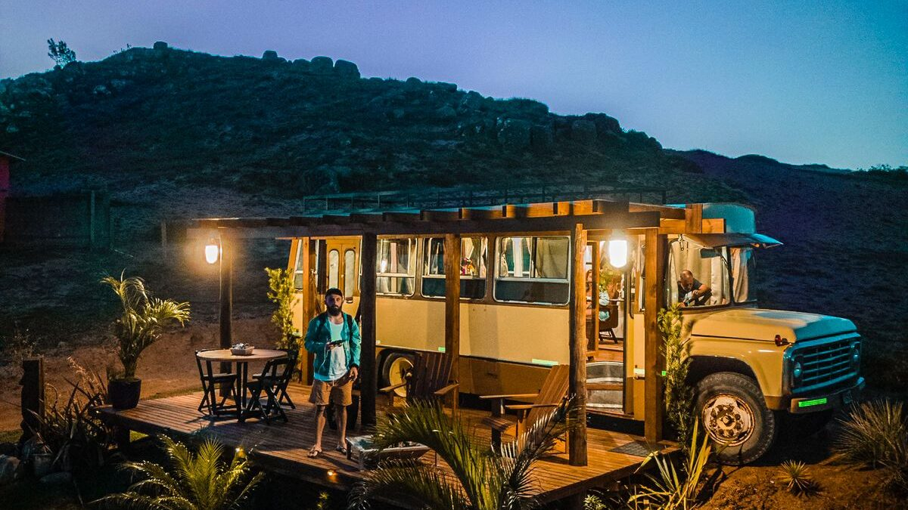
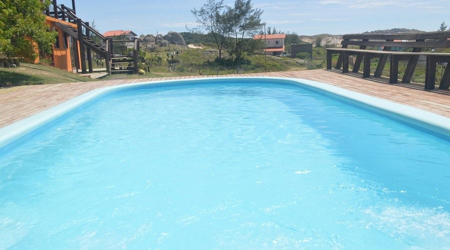

Pousada Quinta do Ypuã


 





Pousada Quinta do Ypuã
A pousada Quinta do Ypuá oferece aos seus clientes um recanto de aconchego e lazer, em ambiente rústico e agradável. Ideal para quem gosta de fugir da rotina e procura um local de paz para descansar e curtir a natureza.
“O Ypuá tem tudo a ver com a natureza, dá para sentir a energia do lugar. Eu me preocupo se você vai comer bem, dormir bem e se vai se sentir em casa. Vou te mostrar onde encontrar os melhores frutos do mar, onde curtir a melhor praia e as melhores ondas. Mas se você não quiser fazer nada eu também conheço o melhor lugar.”